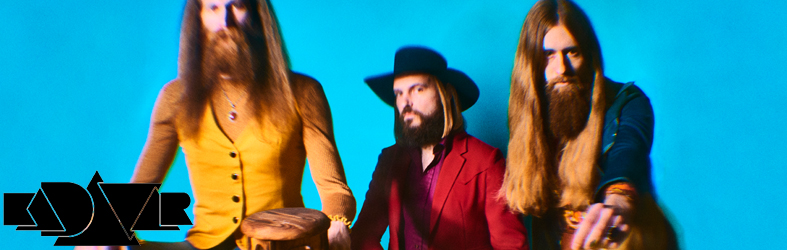

KADAVAR "Rough Times"
"Rough Times"
Los principales científicos del mundo recientemente declararon al unísono: ¡el viaje en el tiempo ya no se puede considerar ficción sino realidad! Tampoco su certeza se originó a partir de experimentos de pensamiento hipotéticos, ni de años de prueba en laboratorios aislados. Era el disco de un trío de rock de Berlín, Alemania, que había caído en las faldas de los profesores de la nada y los llevó a proclamar con alegría: "Cálido, intenso, auténtico, ¡sin duda un regalo de tiempos pasados!".
Ya fue con el álbum debut del mismo nombre de 2012, "Kadavar", que KADAVAR conjuró a todos los fanáticos de los discos duros de los 70, duros como la percusión, al estilo de los años 70 al BLACK SABBATH o PENTAGRAM. Combinar esto con el amplio enfoque psicodélico de HAWKWIND temprano y mezclar en un toque propio mientras conserva el cálido encanto vintage de sus iconos sin duda puede considerarse la clave del éxito del trío: ventas de vinilo increíblemente altas y shows de soporte para bandas como SLEEP, SAINT VITUS, PENTAGRAM y WIZARD ELÉCTRICO, así como impresionantes conciertos de festival en "Stoned From The Underground", "Yellowstock" y "Fusion Festival", entre otros, subrayan el estado de KADAVAR como uno de los actos más emocionantes de la escena.
Hay tiempo hasta el 12 de abril de 2013 para cultivar una barba completa, acomodar sus zapatos de plataforma y planchar sus pantalones acampanados. A partir de entonces, KADAVAR nos invita a escapar de la mezcolanza musical sin alma del siglo 21 una vez más al adentrarte en los reinos de "Abra Kadavar": rock clásico hecho a mano de una época en la que la música solía ser un verdadero arte.
Después de pasar los últimos 4 meses en el estudio, trabajando ininterrumpidamente en Berlín, los clásicos señores del rock han finalizado el proceso de producción de su flamante álbum. El tercer álbum se titulará "Berlin" y está programado para el 21 de agosto de 2015.
A principios de 2017, la banda se preparó para comenzar un nuevo ciclo de álbumes literalmente arremangándose las mangas y construyendo un nuevo estudio de grabación desde cero. Más de 100 metros cuadrados dentro de un complejo industrial en el área de Neukölln en Berlín ahora es su refugio creativo y lugar de trabajo, y aquí es donde el próximo cuarto álbum de estudio, "Rough Times", ha comenzado a tomar forma. El álbum será lanzado en septiembre de 2017.